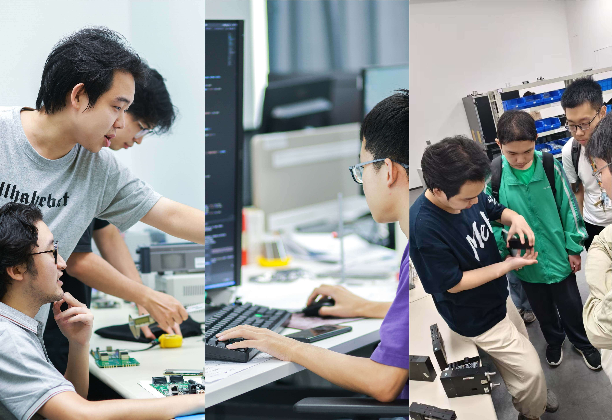

UNDERGRADUATE PRACTICE OPPORTUNITIES PROGRAM
There are many opportunities to learn and grow while studying at Digital PET Laboratory.
What is UPOP?
The Undergraduate Practice Opportunities Program (UPOP) is a co-curricular professional development program exclusively for Digital PET Laboratory sophomores that helps them develop the relevant and critical professional skills necessary to thrive in their chosen career path, whether in industry, research, or academia.
Words from Our Mentors
When you’re competing in the job market as a
Digital PET student or new graduate, potential employers will almost take for
granted your technical and scientific qualifications. But they’re also looking for
people who can express complex ideas in compelling ways and work effectively with
everyone from co-workers to investors. In other words, to develop your own
potential, learning to write and speak clearly and professionally is just as
important as any technical skill.
Qingguo Xie
Principal Investigator
Digitalization detection and instrument
development.
Proton Therapy Monitoring

For digital PET students and new graduates, solid
technical competence is merely a baseline qualification, as employers generally
take their research and engineering capabilities for granted. What distinguishes
high-potential candidates is the ability to explain sophisticated imaging
principles to non-technical stakeholders and collaborate seamlessly across teams.
Ultimately, polished professional communication is just as critical to unlocking
career potential as any technical skill.
Peng Xiao
Ph.D.Professor
Intelligent imaging methodology research and
instrument development
Dual-Dynamic PET

In advanced fields like digital PET, employers rarely question candidates’
technical expertise, but they prioritize the capacity to turn technical strengths
into tangible value. Clear, professional communication is indispensable for
engaging clinical partners, presenting to review panels, and aligning R&D
workflows. To translate technical knowledge into real-world impact, refining
communication skills matters no less than advancing technical hard skills.
Lin Wan
Ph.D.Professor
Fundamental Framework for Detection and Imaging
Plug-n-Image

What UPOP Offer
UPOP helps students throughout the entire process of finding, acquiring, and thriving in their first professional experience and beyond—whether in industry, academia, or public service. We help students develop an amazing resume and cover letter, ace interviews, effectively communicate with employers and colleagues, build a professional network, develop relationships with mentors across many sectors, and just generally stand out from the crowd as they embark on their professional lives.
We do this by offering:
- One-on-one advising with UPOP staff.
- Seven fall and spring Milestone workshops that start with the fundamentals (resumes, cover letters, and making professional connections), and progress to how to thrive in the workplace (project management, professional communications, and interpersonal skills).
- The Team Training Workshop (TTW), a multi-day experiential learning opportunity that focuses on teamwork, communication, and problem-solving.
- A network of UPOP mentors who offer valuable connections and perspectives from their own professional experiences.
- The UPOP Employer Network, representing organizations from a variety of sectors that are interested in hiring UPOP sophomores. Employer network members provide UPOP with listings for open opportunities for students, and sponsor-level members host company information sessions. Our annual Employer Networking & Career Events take place after the second and third TTW sessions each year and are exclusive to the UPOP community.
- Access to UPOP resources for life!
Why join UPOP

Through the UPOP program, you will gain a better understanding of how to
effectively connect with, communicate with, and learn from leading specialists
in the PET field.
We’ll help you kick-start your career! You’ll hone the skills you need to be successful during your search for internships, UPOPs, or public service; your interview process; and when you’re out in your chosen field. This includes helping you develop an amazing resume and cover letter, ace interviews, effectively communicate with employers, build a network, develop relationships with mentors from all sections of industry, find job postings and employers specifically interested in UPOP sophomores; exceed expectations, and stand out in your summer experience.
By the end of UPOP, students will be able to:
- Craft personalized resumes and compelling cover letters and understand how to update them for their intended use.
- Effectively interview for a desired position and present their best self.
- Navigate networking events and deliver a polished elevator pitch.
- Execute a targeted summer experience search, maximizing chances for success for getting an internship, UPOP, or public service experience.
- Communicate effectively in teams and with individuals at all levels of an organization.
- Lead a structured process for group project planning in a time- and resource-constrained environment.
- Articulate the value of teamwork and its impact on problem-solving as a group.
- Contribute effectively to future employers.
Enrolled students in UPOP
How to Apply
No matter where you are in the process of looking for a professional experience, you will find benefit in the learning opportunities UPOP provides, including 1:1 advising with staff, skill-building workshops, and our deep-dive experiential learning opportunity, the Team Training Workshop (TTW).
The UPOP year consists of three separate courses, and you must register for each:
- 2.EPE fall (includes four Milestone workshops)
- 2.EPW (includes the TTW)
- 2.EPE spring (includes three Milestone workshops)
Once you are officially registered, Lab will provide all the information you’ll need for the UPOP year, including the syllabus and other important resources. If you have any questions or conflicts at any point in the year, feel free to email petlab@hust.edu.cn and a UPOP team member will be happy to help. Don’t forget to stop by our office anytime in Room 401 for snacks, coffee or tea, space to work, or to book time in our soundproof pod for an interview or meeting.
What UPOPers say
- "UPOP helped me take my skills and learn how to apply them professionally. I got hands-on experience in communication, presentation, and negotiation, making me feel more confident in the workplace." - Ao Qiu
- "UPOP gave me more than a polished resume; it gave me the full picture. From negotiation tactics to LinkedIn strategy to the unspoken rules of the job market, I walked away knowing how to actually use every tool at my disposal. The confidence that comes with that knowledge is real. " - Wentao Hu
- "UPOP has given me the tools, especially through the one-on-one mentor meetings, to better express who I am and how I can contribute. I really do feel a lot more prepared to work effectively in a team." - Youdong Lang
- "UPOP students are getting this amazing opportunity that even a lot of us in our careers don't often get. It's just really unique and valuable." - Jingmin Zhu
UPOP accepts a rich variety of engagement and sponsorship opportunities.
Sponsors receive all the free benefits of employer network membership, such as advertising job postings to students and receiving invitations to attend UPOP events with students, in addition to deeper levels of engagement via our tiered corporate sponsorship offerings, including both ad hoc event opportunities and annual sponsorship. UPOP welcomes companies of all sizes from a wide range of industries to sponsor.
Unlike general HUST career fairs and on-campus information sessions, sponsored UPOP events are designed to facilitate long-term recruiting and engagement pipelines between UPOP sponsors and UPOP students. UPOP students, in turn, benefit from exclusive access to partnering employers through these sessions.
Feel free to contact our employer relations manager with questions or about next steps.
Contact Us
PETLab looks forward to connecting with you from across the globe to jointly explore, invent, innovate and create.